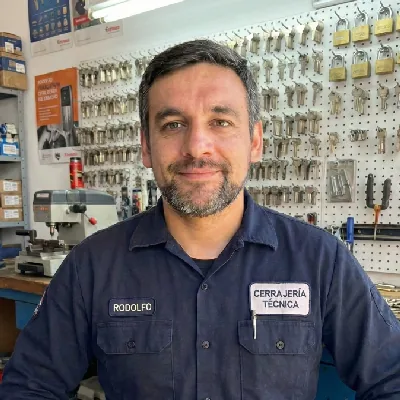

Cerrajero en Pudahuel 24 Horas

¿Necesitas un cerrajero en Pudahuel ahora mismo? Atendemos toda la comuna, incluyendo Av. Pérez Zujovic, Av. Américo Vespucio, Pudahuel Sur y Pudahuel Norte. Llegamos en 25-35 minutos con herramientas profesionales completas.
Técnico certificado con 20 años de experiencia en la Región Metropolitana. Presupuesto previo sin costo, sin recargo nocturno ni en festivos.
Tiempo de llegada
Disponibilidad
Sin costo previo
20 años experiencia
Servicios en Pudahuel
🚪 Apertura de Puertas
Casas, departamentos y oficinas en Pudahuel. Sin daños, presupuesto previo. Desde $35.000.
Cotizar por WhatsApp →🔐 Cambio de Chapas
Instalación de cerraduras de seguridad. Marcas Yale y Mul-T-Lock. Garantía 6 meses. Desde $55.000.
Cotizar por WhatsApp →🚗 Cerrajería Automotriz
Apertura de autos y copias de llaves en Pudahuel. Herramientas Lishi profesionales. Desde $45.000.
Cotizar por WhatsApp →Opiniones de Clientes en Pudahuel
"Llegaron en 30 minutos a Pudahuel Sur. Abrieron mi puerta sin daños y precio justo."
"Cambié la chapa de mi casa en Av. Vespucio. Trabajo rápido y garantía de 6 meses."
"Servicio nocturno en Pudahuel Norte sin recargo extra. Muy profesionales."
Preguntas Frecuentes
Entre 25 y 35 minutos según el sector. Atendemos Pudahuel Norte, Pudahuel Sur, Av. Américo Vespucio y todos los conjuntos habitacionales de la comuna.
Apertura de puerta desde $35.000 CLP. Cambio de chapa desde $55.000. Apertura de auto desde $45.000. Presupuesto sin costo antes de actuar.
Sí, servicio 24/7 sin recargo nocturno. Madrugadas, fines de semana y festivos en toda la comuna de Pudahuel.
¿Necesitas un Cerrajero en Pudahuel Ahora?
Técnico certificado disponible 24/7. Llegamos en 25-35 minutos.
¿Quedaste conforme? Déjanos una reseña en Google ★
Ver también: Cerrajero en Maipú · Cerrajero en Estación Central · Checklist de seguridad del hogar